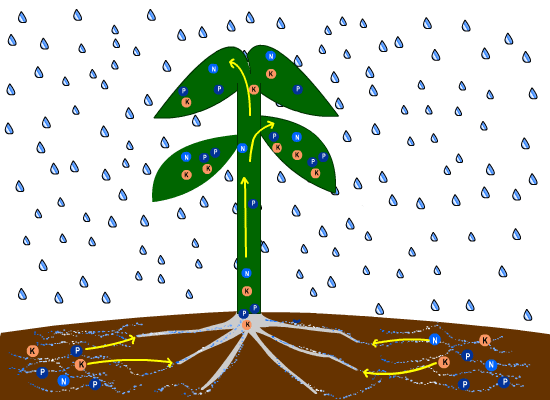
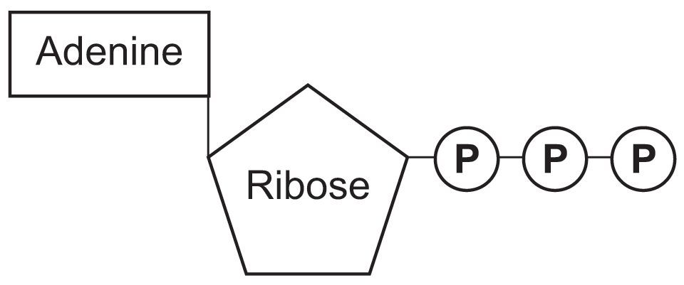
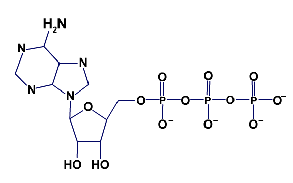

Have you ever wondered how things grow? Matter cannot be created out of nothing. So,
for plants and animals (including people) to grow and to replace cells that have died,
the plants/animals need to take in matter. Where does this matter come from?
The number one MAJOR source of materials for plants to grow is carbon dioxide, which plants get from the air!
Most of the atoms that plants are made of come from carbon dioxide molecules in the air that become
different types of molecules during
chemical reactions
in photosynthesis!
What else (besides CO2 and water) do plants need to grow? Another source of matter for plants
is minerals (made of atoms/molecules) that plants get from the soil. These minerals that plants take in will
help build the new cells in plants. These minerals also provide some of the energy needed to make different
kinds of cells in plants.
-
The Main nutrients plants need from soil (and often in fertilizers) are the elements: Nitrogen(N);
Phosphorus (P); Potassium (K). These minerals are commonly found in fertilizers you can buy
in stores.
-
Nitrogen (N) is a gas at temperatures on Earth. Because of this, the Nitrogen in fertilizers must be
bonded with other atoms in the form of a molecule (otherwise, it would just escape from the fertilizer
into the air due to its lower density). Some common molecules in fertilizer that contain Nitrogen are
Nitrate, NO3 and Nitrate Nitrogen, which is just Nitrate with another Nitrogen atom:
NO3-N.
-
Similarly, Phosphorus (P) in fertilizer is in the form of P2O5.
-
And Potassium (K) is in the form K2O (called potash).

Nutrients in soil, including the elements Nitrogen (N), Phosphorus (P), and Potassium (K), dissolve in water
when it rains and are able to enter the roots of the plant. These nutrients travel to different parts of the
plant, including the stem, leaves, and branches, where they are used by the plants as materials and energy to
build and repair cells.
Carbon dioxide from the air is a very important part of plants. Many people do not realize that most
of the atoms that make up plants come from carbon dioxide in the air!
What do these minerals (N, P, and K) do?
-
Nitrogen (N) is used by plants for growth. Nitrogen also helps
give plants their green color.
-
Nitrogen is very important because it is a part of chlorophyll molecules. A chlorophyll molecule is:
C55H72O5N4Mg;
it has 55 Carbon atoms, 72 Hydrogen atoms, 5 Oxygen atoms, 4 Nitrogen atoms, and one Manganese atom.
Chlorophyll is the molecule that sunlight hits and gives energy to produce sugars from water and carbon
dioxide (i.e., photosynthesis) in chemical reactions. Chlorophyll is what gives plants their
green color.
-
But, most of a chlorophyll molecule is made of Carbon and Hydrogen atoms! (You need 55 Carbon atoms
and 72 Hydrogen atoms for just one chlorophyll molecule!) Where does the Carbon and Hydrogen atoms
come from? As you may have guessed, Carbon comes from CO2 in the air. And the Hydrogen
atoms come from water (H2O)!
-
Nitrogen is also a major component of amino acids, the building blocks of proteins. (Proteins are very
important complex molecules that do most of the work in cells and are required for the structure,
function, and regulation of the organism’s tissues and organs.)
-
Phosphorus (P) is used by plants to help form new roots,
make seeds, fruit and
flowers. It's also used by plants to help fight disease. In addition...
-
Phosphorus (along with Oxygen) form phosphate molecules in ATP. ATP (Adenosine Tri-Phosphate) is a key
source of energy for plants and animals. ATP breaks apart glucose in a very complicated series of chemical
reactions. The end result of these reactions is to produce more ATP, which provides the energy to make
various parts of plants, including leaves, flowers, seeds, etc. So, ATP and glucose react to form more ATP!
This is how important ATP is for life! Because ATP is so important, we talk about it more below.
-
Potassium (K) helps plants make strong stems and
grow fast. It's also used to help fight disease. In addition:
-
Potassium helps control the opening and closing of little holes called stomata (see
Vascular plants
unit for more information on stomata), and therefore controls how much CO2 enters and leaves
the plants. CO2 is necessary for
photosynthesis
to occur.
-
Potassium also triggers the activation of enzymes (molecules that help speed up chemical reactions).
Potassium is also essential for the production of the molecule Adenosine Triphosphate (ATP).
Sources of Energy in Plant/Animal Cells
Where exactly do plants and animals get the energy to repair cells and build new cells? Remember that energy is
not a different kind of substance from the different types of atoms in the periodic table. Energy is (a)
the actual motion of particles (atoms, molecules) or (b) the potential for greater motion of particles.
ATP molecules. A key source of energy is the molecule ATP
(C10H16N5O13P3),
Adenosine Tri-Phosphate. ATP is critical for plants and animals in performing cellular work such as repairing
cells and building new ones, including leave, flower, and seed cells.
-
But, how does ATP "make energy"? (Remember: "energy" is all about motion!) To answer, we must first see what ATP molecules are made of. The pictures below
show two different ways to represent the ATP molecule. As you can see, ATP is made of three parts: adenine, ribose,
and a group of three phosphates. (The adenine and ribose parts of ATP are together called "Adenosine", and the three phosphates make up the
"Tri-Phosphate" part of "ATP.")


-
The key part of the ATP are the three phosphates, PO4 (shown on the right side of both
figures above). The last phosphate on ATP
breaks away from the rest of the molecule (which is now ADP, or Adenosine Di-Phosphate, because it only has
two phosphate molecules).
-
Some of this lone phosphate's electrons move to a lower
energy level
as a result of the phosphate breaking its bond in ATP. Because
energy must be conserved
, this phosphate gains kinetic energy, or moves around faster. This
kinetic energy
due to motion can cause chemical reactions in plants and animals that require energy for the reaction
to take place.
-
The kinetic energy from the last phosphate that has broken from the ATP (now ADP) molecule is also used by
plants and animals to move other materials in and out of cells (and in animals, to make muscles contract!).